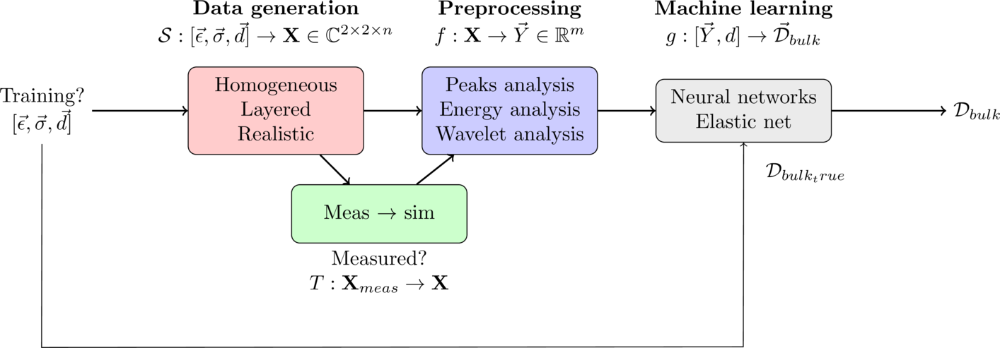
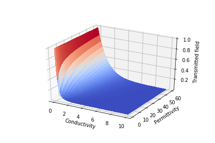
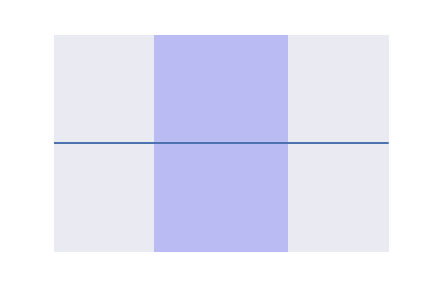
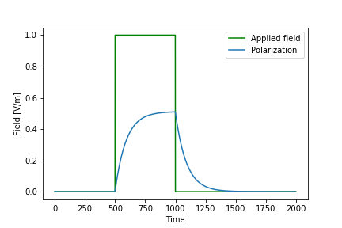

background¶
The dp_ml package uses a few forms of machine learning to develop models for property estimation. Namely, neural networks and elastic net regression. We also use different algorithms for processing the raw data prior to generating the models, such as wavelet decomposition and time of flight analysis. This document will describe some of the underlying techniques used in the package. It may be best to read this document prior to the Tutorial document, in order to better understand the steps it takes.
introduction¶
The estimation of dielectric properties - permittivity and conductivity - is of interest in many biomedical applications. These properties depend primarily on water and salt content, which change according to tissue type and physiological status. Beyond a full imaging system, dielectric property estimation at microwave frequencies (i.e. 10s of MHz to 10s of GHz) is most often performed with the open-ended coaxial probe. This device assesses the reflection which occurs at the end of the coaxial line when in contact with the tissue in order to estimate permittivity and conductivity. Due to the geometry of the system, it is only able to sense within a few mm of the probe head. It thus provides little utility for in vivo monitoring applications.
To assess the properties of tissues below the surface of the skin, antennas can be used to couple electromagnetic waves into volumes of human tissue. The reflected and transmitted signals can then be used to estimate the dielectric properties of the tissue. Our group has proposed a method of dielectric property estimation using microwave antenna measurements. This method involves placing antennas in direct contact with the tissue, and transmitting microwave signals through the tissue. We generally obtain an accuracy within 10% for homogeneous tissue-mimicking mixtures, making the method comparable with the dielectric probe. However, in heterogeneous tissues common in humans, property estimation presents a challenge due to complex antenna behaviour, multiple reflections at tissue interfaces, and multiple signal paths which can be taken. Analytical modelling of this scenario is thus very difficult.
Electromagnetic simulations provide a valuable tool when exploring new processing techniques, antenna designs, and interactions of fields with various materials. They can be used to develop models to guide our understanding of these complex phenomena, allowing better interpretation of measurements in the real world. Given the strong agreement between simulation and experiment, this study now aims to use simulation tools as a direct model of phenomena in experiment. With recent advances in computation and simulation software, we now aim to use simulation to generate large amounts of data in order to estimate dielectric properties from antenna measurements using machine learning techniques.
the problem¶
- Let us simply summarize the problem we are trying to solve:
- Antenna measurements are used, allowing for non-invasive interrogation of tissues by propagating electric fields within them
- Dielectric properties cannot be directly measured. Instead we measure parameters such as the reflected and transmitted signals between the two antennas. These are called the Scattering Parameters (S-Parameters), and can be considered in both the time and frequency domain.
- We now have an inverse problem. The dielectric properties affect the S-Parameters, but we do not know what they were to begin with. How can we go from the S-Parameters back to the dielectric properties?
The solution that we use in this method is that in simulation, we do know what the properties are. This means that for every S-Parameter, we can know exactly what dielectric properties this corresponds to. Machine learning comes into play by figuring out how to use all of the data that we simulate to create models capable of estimating properties in the future, particularly from S-parameters from measurements. The basic idea is to create a training set — that is, a large set of data with known properties — in order to generate these models which can perform predictions from future S-parameters when dielectric properties are not known. Before feeding large amounts of data into the learning algorithms, we first preprocess the data to highlight specific features of it: for instance, time of arrival and signal intensity.
the approach¶
Data is first generated through simulations. These simulations use known properties and geometries, which can be of multiple layers and tissue locations. We denote these parameters \([\vec{\epsilon}, \vec{\sigma}, \vec{d}]\). From the simulations, the two-port S-parameters are extracted, with on the order of a few thousand frequency points \(n\). We could therefore think of the simulation as a function \(\mathcal{S}\) which maps the input properties and geometries to the two-port S-parameters \(\mathbf{X}\) with \(n\) frequency points:
It is important to preserve physical interpretation of these measurements and models. Rather than treating the machine learning algorithms as “black boxes,” we aim to use physical models as a starting point for efficiently interpreting our data. This is useful both to maintain human understandability, and also for potentially more efficient machine learning training. We do this through a preprocessing stage, where various methods based on physical responses can be used to extract useful information from the signals. This could also be thought of as a function \(f\) which maps from the high-dimensional space of extracted parameters \(\mathbf{X}\) to some lower \(m\)-dimensional but dense space \(\vec{Y}\).
These parameters are then fed into the machine learning algorithm which aims to estimate the bulk dielectric properties \(\mathcal{D}_{bulk} = [\epsilon_{bulk}, \sigma_{bulk}]\). During the training process, the true bulk properties \(\mathcal{D}_{bulk,true}\) are known. By comparing the estimated and true properties, the algorithms are able to “learn” the optimal coefficients of the learning algorithms. We can again consider the machine learning algorithms as a function \(g\) which maps the dense space \(\vec{Y}\) and the total separation distance \(d\) to the bulk dielectric properties as:
Of course in testing scenarios, the true parameters are not known. We therefore make the assumption that the testing space is a subset of the training space, such that the trained algorithms can make appropriate inferences about the testing data. The training process provides no guarantee of estimations outside the domain of training data given to it. However, if the input parameters are based on physical responses, perhaps there are methods of extrapolation we could pursue.
Since we plan to apply these algorithms with measured data, we finally require a method of ensuring comparable parameters from simulation and measurement. This stage aims to transform measured antenna data to what would be recorded in a similar configuration in simulation.
All of these stages are outlined in the flowchart below.
{kind=link}
Each stage will be explained in greater detail. To provide context for these steps, we first provide an overview of the underlying electromagnetic phenomena.
some electromagnetic theory¶
Permittivity (ε) and conductivity (σ) describe a material’s ability to store and dissipate electric energy, respectively. In biological contexts, permittivity is primarily indicative of water content, and conductivity is indicative primarily of both water and ionic content. Biological tissues are almost entirely nonmagnetic (despite small iron content in the blood) meaning only the dielectric properties are considered. In this method, the objective is to recover bulk dielectric properties from antenna measurements. The antenna system is shown below.

We can now explore how the reflected and transmitted signals are affected by the tissue properties. By neglecting complex phenomena in the antenna such as radial spreading and near-field interaction, the wave propagation can be represented as a uniform plane wave. The magnitude of the transmitted signal is influenced by the attenuation coefficient \(\alpha\), and the phase of the transmitted signal is influenced by the phase coefficient \(\beta\). These are found from the dielectric properties as:
$$ \alpha = \omega \sqrt{\frac{\mu \epsilon}{2} \bigg[ \sqrt{1 + [\frac{\sigma}{\omega \epsilon}]^2 } -1 \bigg] } $$ $$ \beta = \omega \sqrt{\frac{\mu \epsilon}{2} \bigg[ \sqrt{1 + [\frac{\sigma}{\omega \epsilon}]^2 } + 1 \bigg] } $$
where \(\omega\) is the angular frequency in [rad/s], and \(\mu\) is the permeability of free space. The resulting amplitude change loss of the uniform plane wave can be determined as a simple exponential decay:
$$ \textrm{E}_{z=l} = \textrm{E}_0 e^{-j\beta l}e^{-\alpha l} $$
With different dielectric properties, the transmitted fields through a tissue can be found. For instance, the figure below shows the transmitted field at 30 mm for different permittivity and conductivity.
However, at the interface of each antenna, some portion of the signal is reflected and some portion is transmitted. The reflections can be determined by the intrinsic impedance of each medium, where:
$$ \eta_{tiss} = \sqrt{\frac{j \omega \mu_0}{\sigma_{tiss} + j \omega \epsilon_{tiss}}}; \eta_{ant} = \sqrt{\frac{j \omega \mu_0}{\sigma_{ant} + j \omega \epsilon_{ant}}} $$
The reflection and transmission coefficients at each interface can be found as:
$$ \Gamma = \frac{\eta_2 - \eta_1}{\eta_2 + \eta_1} $$ $$ T = \frac{2 \eta_2}{\eta_2 + \eta_1} = 1 - \Gamma $$
Considering the entire system to the antenna apertures (not considering loss and phase change in the antennas), we can model the recorded transmitted and reflected signals as:
$$ S_{21} = T_1 e^{-\alpha d} e^{-j \beta d} T_2 $$ $$ S_{11} = \Gamma_1 + T_1 e^{-2 \alpha d} e^{-2j \beta d} \Gamma_2 T_2 $$
These effects can be observed in the animation below. An incident time domain pulse from one antenna is transmitted through a lossy tissue. Reflected and transmitted signals can be seen.
The realistic scenario is much more complex; there are reflections at the antenna apertures, losses and phase shift within the antennas, and spreading of the signal within the tissue. Further, antenna behaviour is very difficult to model analytically as it varies depending on the dielectric properties of the tissue, the signal frequency, and system geometry. To model this, advanced simulation tools can be used. Our group uses a finite difference time domain (FDTD) method, which solves Maxwell’s curl equations in the time domain. Antenna simulations have been found to agree with measured data, making this a powerful tool for antenna measurement analysis. Simulations are advantageous in that we can create as much training data as we need, or at least as much as time and resources allow. Further, the dielectric properties in the simulation are known to be true. In measurement, we have the issue of determining a ground truth, since other methods of property estimation such as the dielectric probe can have as much as 10% error.
dielectric property characterization¶
Since the polarization of dielectrics can occur at a variety of time scales, permittivity and conductivity vary with frequency. Atomic polarization occurs nearly instantaneously, so high frequency signals have permittivity contributions due to this mechanism. Other forms such as molecular relaxation can occur much more slowly, meaning that high frequency signals do not allow enough time for molecules to rotate and contribute to the material’s polarization. In static fields we expect all time scales of polarization to contribute to the overall permittivity.
The Debye model gives us a way of modelling this frequency dependence of permittivity and conductivity. It considers the static \(\epsilon_s\) and instantaneous permittivity \(\epsilon_\infty\), and the time scale of dielectric relaxation \(\tau\).
$$\epsilon(\omega) = \frac{\epsilon_s-\epsilon_\infty}{1+j\omega\tau} $$
While analysis is often done in the frequency domain, time domain characterization employs some telling features of dielectric materials. It also reflects how materials are characterized in FDTD simulations. A useful tool to this end is the susceptibility kernel — describing the constitutive relation between the electric flux density and the electric field as:
In the time domain, the constitutive relation (between electric flux density and electric field) can be represented by:
where \(\chi(r,t)\) represents the susceptibility kernel. The temporal convolution:
describes the polarization according to dispersive nature of the material. For instance, for Debye models the susceptibility kernel is:
where \(H(t)\) is the Heaviside unit step function to ensure causality, and \(\beta \tau = \epsilon_s - \epsilon_\infty\).
In a capacitor, we could observe how this polarization takes place according to a step function of an applied field. Observe how the polarization does not respond instantaneously to the field, but has an exponential response. Note that the polarized field points in the opposite direction as the applied field.
We can then observe how this affects the propagation of signals. Starting from the conventional wave equation:
$$ \textrm{E}_{zz} - \frac{1}{c^2}\textrm{E}_{tt} = 0 $$
The susceptibility kernel adds an additional term:
$$ \textrm{E}_{zz} - \frac{1}{c^2}\bigg[ \textrm{E}_{tt} + \partial_t^2 \int_0^\infty \chi(s)\textrm{E}(z,t-s)ds \bigg] = 0 $$
This will be employed in some of the preprocessing techniques to make physically-relevant models for interpreting time domain signals.